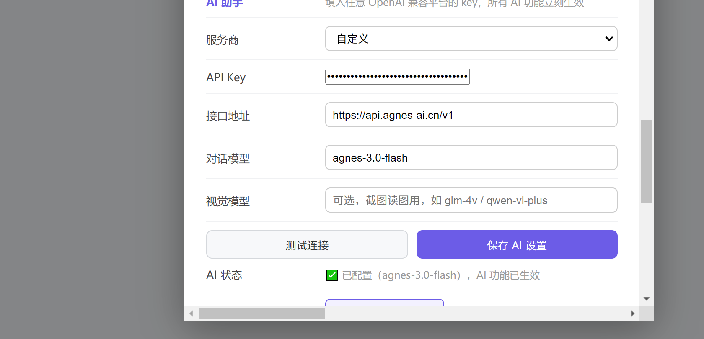

配好之后，浏览器里的对话、翻译、自动操作、填表就全能用了。整个过程不到 3 分钟。
按 Win + Shift + S 截图这个配置页面，把图发给 豆包 / DeepSeek / 通义千问 任意一个 AI，说一句：
「我要在这个浏览器里配置你的 API，请告诉我服务商、接口地址、模型名分别填什么」
它会直接告诉你每一项填什么，照着填进去就行——这比自己研究快得多。
推荐用下面任意一家，都能和本浏览器对接。点链接注册 → 进控制台 → 找到「API Key」→ 点创建 → 复制那串以 sk- 开头的字符。
| 平台 | 注册地址 | 费用 |
|---|---|---|
| 智谱 AI | open.bigmodel.cn | glm-4-flash 完全免费，推荐新手 |
| DeepSeek | platform.deepseek.com | 充 10 元能用很久，速度快 |
| 美团 LongCat | longcat.chat/platform | 每天有免费额度，额度最大 |
| 阿里通义 | bailian.console.aliyun.com | 新用户送免费额度 |
⚠️ 注册要手机号，正常实名就行，不用绑银行卡（除非你自己要充值）。
回到浏览器 → 点右上角 ⚙ 设置 → 往下找 「AI 助手」 区域。你会看到这样一块：

↑ 这就是你要填的页面（截图发给豆包也是发这张）
最快的填法：点那块蓝色的 「📖 查看全网模型推荐」 按钮 → 在列表里找到你注册的那家 → 点右边 「使用」。接口地址和模型名会自动填好，你只需要贴自己的 Key。
如果你注册的是智谱，手动填就是这三项：
| 字段 | 填什么 |
|---|---|
| 服务商 | 下拉选 自定义 |
| API Key | 粘贴你刚才复制的那串 sk-... |
| 接口地址 | https://open.bigmodel.cn/api/paas/v4 |
| 对话模型 | glm-4-flash |
| 视觉模型 | glm-4v-flash（截图问答用，可不填） |
两个按钮都在同一个区域。测试连接会发一条消息过去，AI 回了话就说明配好了；显示失败就检查 Key 有没有粘错（前后不能有空格）或余额够不够。
然后点 保存 AI 设置。看到「✅ 已配置」就成功了，关掉设置，点开浏览器右侧的 AI 助手试试。
sk-xxxx，要整串都复制。glm-4-flash，DeepSeek 是 deepseek-chat）。https://open.bigmodel.cn/api/paas/v4、DeepSeek https://api.deepseek.com/v1、阿里百炼 https://dashscope.aliyuncs.com/compatible-mode/v1。截图整个设置页（Win + Shift + S），发给豆包/DeepSeek，说明你的情况。它们看得到截图，会直接告诉你哪一项填错了。